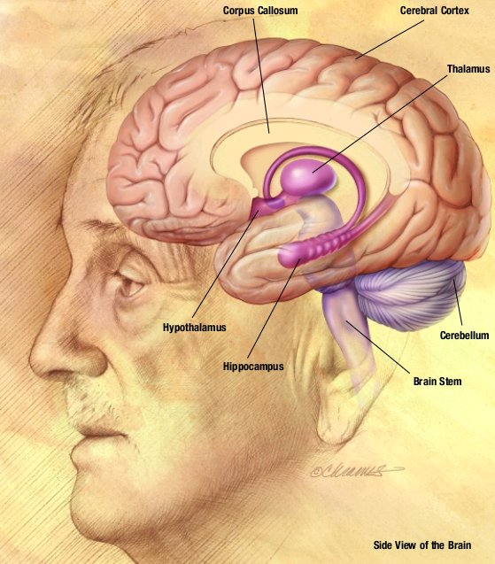

WELCOME TO M BIOLOGY.COM

|
 The shape and size of the brains of different species vary greatly, and identifying common features is often difficult.[3] Nevertheless, there are a number of principles of brain architecture that apply across a wide range of species.[4] Some aspects of brain structure are common to almost the entire range of animals species;[5] others distinguish "advanced" brains from more primitive ones, or distinguish vertebrates from invertebrates.[3] The simplest way to gain information about brain anatomy is by visual inspection, but many more sophisticated techniques have been developed. Brain tissue in its natural state is too soft to work with, but it can be hardened by immersion in alcohol or other fixatives, and then sliced apart for examination of the interior. Visually, the interior of the brain consists of areas of so-called grey matter, with a dark color, separated by areas of white matter, with a lighter color. Further information can be gained by staining slices of brain tissue with a variety of chemicals that bring out areas where specific types of molecules are present in high concentrations. It is also possible to examine the microstructure of brain tissue using a microscope, and to trace the pattern of connections from one brain area to another.[6] |